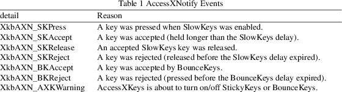
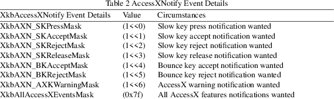

XkbSetBounceKeysDelay − Sets the BounceKeys delay for a keyboard device
|
Bool XkbSetBounceKeysDelay |
(Display *display, unsigned int device_spec, |
unsigned int *delay);
display
connection to X server
device_spec
device ID, or XkbUseCoreKbd
|
delay |
backfilled with bounce keys delay, ms |
The server can generate XkbAccessXNotify events for some of the global keyboard controls. The detail field describes what AccessX event just occurred and can be any of the values in Table 1.

The keycode field reports the keycode of the key for which the event occurred. If the action is related to SlowKeys, the slowKeysDelay field contains the current SlowKeys acceptance delay. If the action is related to BounceKeys, the debounceDelay field contains the current BounceKeys debounce delay.
Selecting for AccessX Events
To receive XkbAccessXNotify events under all possible conditions, use XkbSelectEvents and pass XkbAccesXNotifyMask in both bits_to_change and values_for_bits.
To receive XkbStateNotify events only under certain conditions, use XkbSelectEventDetails using XkbAccessXNotify as the event_type and specifying the desired state changes in bits_to_change and values_for_bits using mask bits from Table 2.

Some users may accidentally "bounce" on a key when they release it. They press it once, then accidentally press it again after they release it. The BounceKeys control temporarily disables a key after it has been pressed, effectively "debouncing" the keyboard. The period of time the key is disabled after it is released is known as the BounceKeys delay. BounceKeys is a boolean control.
When the BounceKeys control is active, the server reports acceptance or rejection of any key to interested clients by sending an appropriate AccessXNotify event.
XkbSetBounceKeysDelay sends a request to configure the BounceKeys control to the server. It does not wait for a reply and normally returns True. Specifying a value of zero for the delay parameter causes XkbSetBounceKeysDelay to generate a BadValue protocol error. If a compatible version of the Xkb extension is not available in the server, XkbSetBounceKeysDelay returns False.
|
True |
The XkbSetBounceKeysDelay function returns True when it sends a request to configure the BounceKeys control to the server. | ||
|
False |
The XkbSetBounceKeysDelay function returns False if a compatible version of the Xkb extension is not available in the server. |
The structure for the XkbAccessXNotify event type is as follows:
typedef struct
{
int type; /* Xkb extension base event code */
unsigned long serial; /* X server serial number for event */
Bool send_event; /* True => synthetically generated */
Display * display; /* server connection where event
generated */
Time time; /* server time when event generated */
int xkb_type; /* XkbAccessXNotify */
int device; /* Xkb device ID, will not be XkbUseCoreKbd */
int detail; /* XkbAXN_* */
KeyCode keycode; /* key of event */
int slowKeysDelay; /* current SlowKeys delay */
int debounceDelay; /* current debounce delay */
} XkbAccessXNotifyEvent;
|
BadValue |
An argument is out of range |